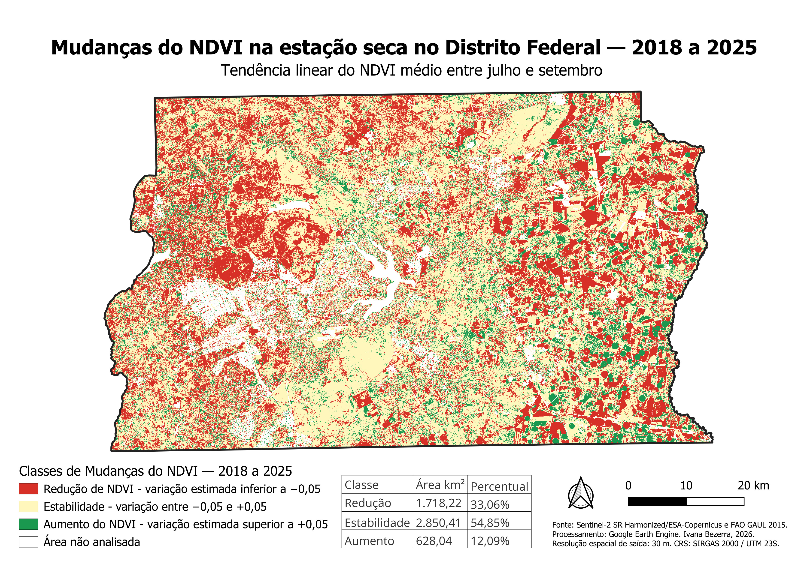

Remote sensing

Geospatial project #01
Multitemporal Vegetation Monitoring in Brazil’s Federal District
Analyzed NDVI variability between 2018 and 2025 using Sentinel-2 imagery, focusing on dry-season patterns and areas of vegetation decline, stability and increase.
Sentinel-2Google Earth EngineQGISNDVIJavaScript